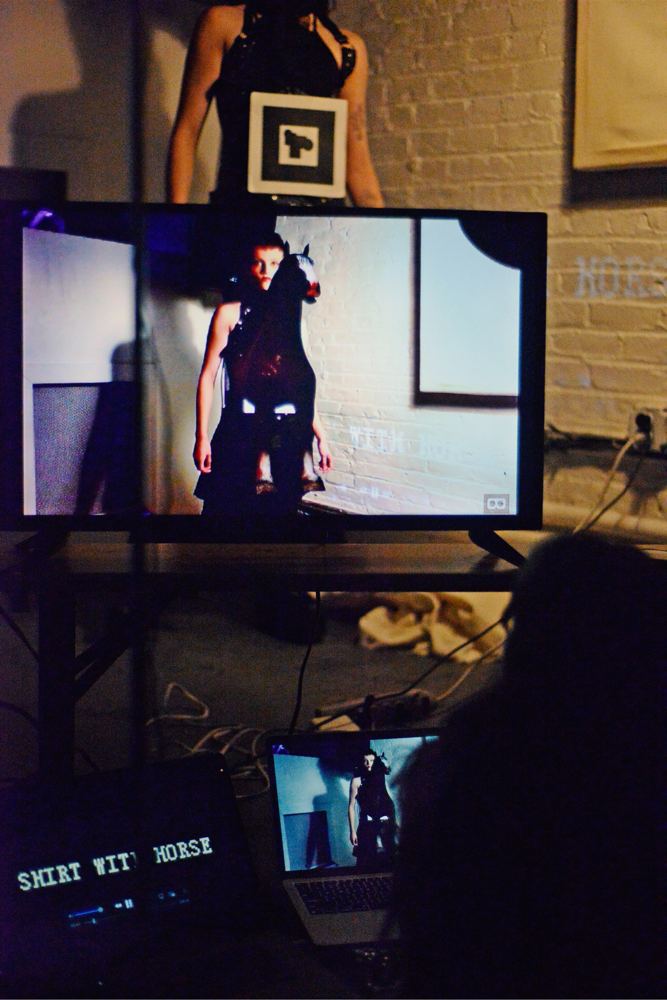
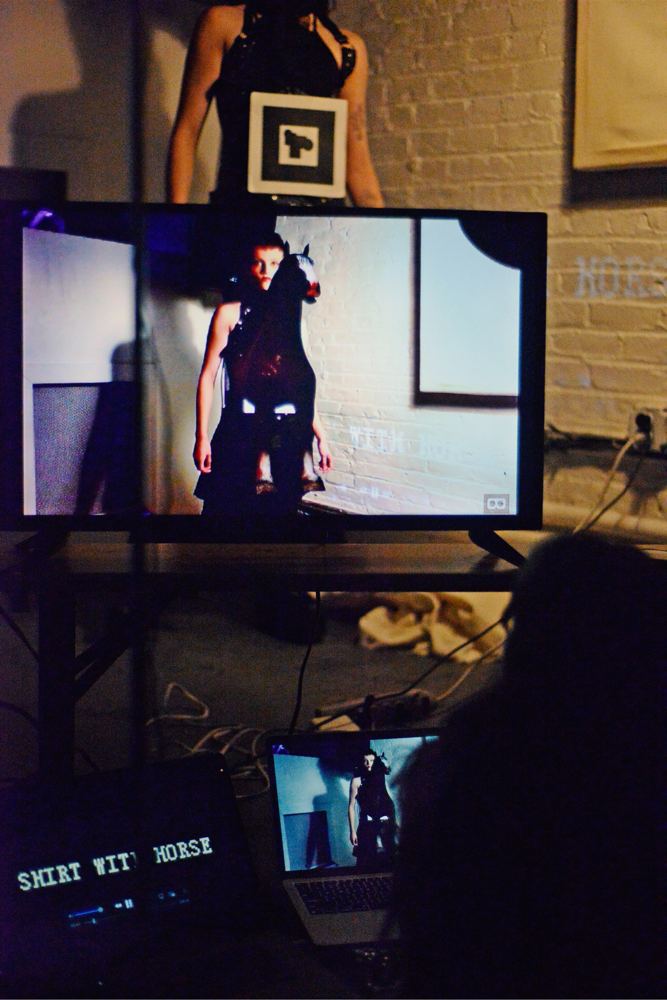

SCAN ARTIST
Learn More ↗.png)

A NYFW show that tells a story about the current scourges of the fashion industry through marker-based augmented reality.
 

Ready Companion
Learn More ↗.png)

I was the lead iOS developer on this augmented reality tour guide app, sold to Syracuse University. With precise geolocation technology, this app simulates a campus tour.


Aesthetic Computer
Learn More ↗
I spearheaded the development of Aesthetic Computer's "Happy Hands," a series of hands-free (or trackpad-free) controlled immersive gameplay.
For Mapping Hand Gestures, visit https://aesthetic.computer/wave.
For the ability to communicate through hand gestures and camera input, head over to https://aesthetic.computer/handtime.
And if you're up for the challenge of a pinball game controlled solely by hand gestures, dive into the action at https://aesthetic.computer/staka.
Uye Surana
Learn More ↗

You're the fairest of them all! In collaboration with the head designer of Uye Surana, I built "magic mirrors" for a fashion brand emphasizing inclusivity.
Pianos
Learn More ↗

Live-coding to enhance the performances of local musicians at an ongoing artist-in-residency.

Emotions Detector
Learn More ↗

Inspired by the dystopian smile detector Canon installed in their Chinese offices (2021), I temporarily implemented browser-based emotion tracking on my personal website. With Google Analytics, I was able to see whether or not people were enjoying their time at tina.zone.
Distance From Source
Learn More ↗
I want the truth. Don't stray from the source. This diary entry obfuscates the further you are away from the place it was written.
Worship Me
Learn More ↗
A site where you can send shrines of yourself to anyone via link, designed for loving each other through the screen. Selected for Syntax Magazine, Vol 2.
Enhance TINA.ZONE with AR helper
To get started, scan the QR code below on your mobile deivce.